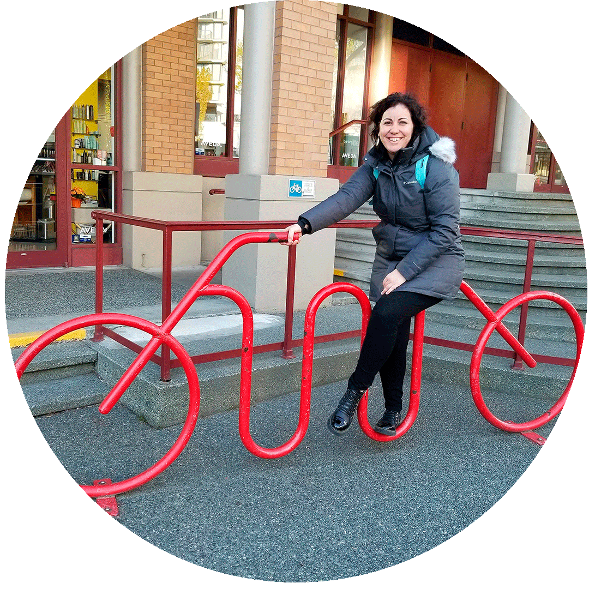

¡Hola! Soy Carolina Puppo
Y éste es mi Portfolio, una hoja de ruta profesional. Soy periodista formada académicamente y en las redacciones de los diarios La Razón, Clarín y La Unión, y diplomada en Marketing Digital y Social Media. Tengo un conocimiento avanzado de Facebook e Instagram Ads y estoy certificada en Google Ads y Analytics. Además soy docente en la Escuela Terciaria ETER en las materias Técnica Periodística I y II, y me acabo de sumergir en mi próxima aventura: la programación.
Conocé más de lo que hago